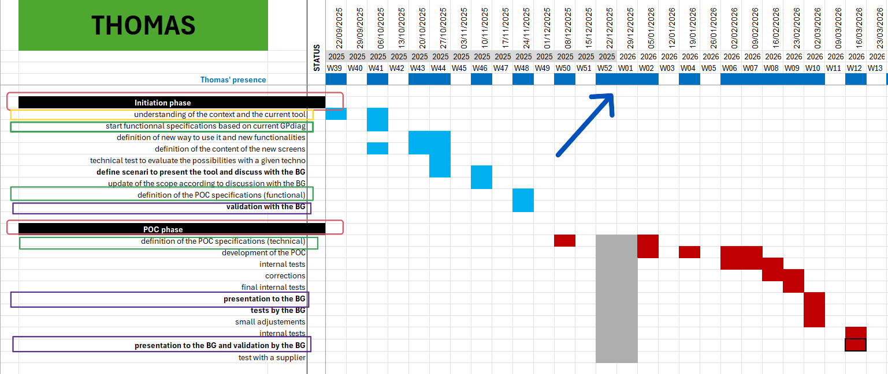

Suivi de Projet et Cadrage
Cette section détaille la méthode de gestion et de suivi que j'ai appliquée tout au long du projet.
Sous-page : Planification et Pilotage des Échéances
- Analyser l'environnement technologique existant
- Rédiger des spécifications fonctionnelles et techniques
- Intégrer des jalons de validation
- Planifier les phases de développement

1. Descriptif général de la trace et contexte
La trace n°3 représente le diagramme de Gantt que j'ai créé et mis à jour pour organiser et suivre mon travail en entreprise. Ce planning est découpé en deux grandes phases, entourées en rouge sur la gauche : la phase d'initiation pour l'étude et le cadrage, et la phase de réalisation de la preuve de concept (POC - Proof of Concept).
Dans mon alternance, ce document est mon tableau de bord pour la gestion de projet. Il permet de montrer clairement où en sont les développements à mon tuteur et aux autres équipes. Le terme « BG » signifie Business Group (le groupe métier), qui est mon client interne et le commanditaire du projet.
2. Analyse détaillée des savoir-faire mis en œuvre
Pour commencer le projet sur de bonnes bases, j'ai d'abord dû analyser l'environnement technologique existant. Comme le montre l'encadré jaune sur la trace n°3, la phase d'initiation commence par l'étude du contexte et du fonctionnement du logiciel actuel de l'entreprise (understanding of the context and the current tool). Cela m'a permis de comprendre ses points forts et ses faiblesses pour concevoir une solution adaptée.
Après cette étude, j'ai utilisé mes compétences pour rédiger des spécifications fonctionnelles et techniques. Ce travail est entouré en vert sur la trace n°3. J'ai d'abord listé les besoins en me basant sur l'ancienne application GPdiag (start functional specifications based on current GPdiag), puis j'ai écrit les détails techniques et fonctionnels de la nouvelle version (definition of the POC specifications). Ces documents servent de guide pour le développement.
Pour sécuriser le projet et ne pas travailler seul de mon côté, j'ai veillé à intégrer des jalons de validation réguliers avec les utilisateurs. On les voit avec les encadrés violets sur la trace n°3. Ces moments d'échange permettent de valider chaque étape importante : le choix du périmètre à la fin du cadrage (validation with the BG), une présentation d'avancement au milieu (presentation to the BG) et une démonstration finale pour valider la recette de la preuve de concept (presentation to the BG and validation by the BG).
Enfin, pour gérer le calendrier, j'ai appris à planifier les phases de développement. La flèche bleue sur la trace n°3 montre la ligne du temps organisée par semaines (W39 à W13). J'ai estimé le temps pour chaque tâche, défini l'ordre des étapes et pris en compte les imprévus, comme les périodes d'absence affichées en gris. Même si des problèmes techniques ont bousculé le planning et décalé la livraison par rapport aux prévisions de départ, tenir ce suivi de projet a été indispensable pour mesurer les retards, revoir les priorités et piloter la suite du travail face aux contraintes de l'entreprise.
3. Auto-évaluation et bilan personnel
Contexte d'apprentissage et maîtrise : Sur l'aspect gestion et planification de projet, j'ai appris à utiliser ces méthodes lors de certains cours, mais je n'avais pas assimilé correctement toutes les notions et leurs objectifs.
Difficultés rencontrées : Face aux retards et aux aléas techniques rencontrés sur le planning, la gestion de mon temps a été compliquée parce que ne connaisant pas le monde de l'entreprise et son contexte, je n'avais pas réalisé tous les aléas qui pouvaient arriver ainsi que leur importance, la date de validiation de la preuve de concept s'est donc vue décalée de plusieurs mois.
Évolution de mon niveau d'expertise : Si je compare mon niveau avant et après la gestion de ce calendrier, je remarque que je ne connaissais rien au milieu de l'entreprise et je n'ai estimé les délais qu'avec le temps que je pensais mettre au développement aux vues de mes compétences, qui elles mêmes s'avéraient finalement être floues aussi. Je m'évalue donc comme moyen car j'ai appris que tout ne dépend pas que de soi-même et qu'en entreprise, tout prend souvent beaucoup plus de temps que la première estimation intuitive que nous avons et que le client peut souvent avoir de nouvelles idées en chemin. J'étais donc très mauvais dans cette compétence, mais cette expérience m'a permi d'apprendre de mes erreurs.